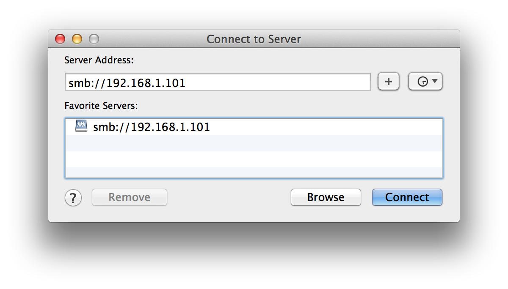

Setting up a simple file server on Ubuntu
by Adil Soubki on Dec. 19th 2014
I recently dusted off the computer I built in high school and decided to install Ubuntu on it and try to set it up as a simple home file server. In doing so I realized I both had no idea how to set up a server or even use linux. After I got it working I decided that I should document it before I forget and hey, maybe it will be useful to someone else.
A Word of Warning
Before you use this as a tutorial I have a few disclaimers.
- I am NOT an IT professional
- I am NOT a linux superuser
- I do NOT know what I'm doing
But sometimes it's easier to learn from people who don't know what they're doing so use at your own risk.
Configuration
I am setting this up using Ubuntu 14.04 right out of the box. I did not choose to use the Ubuntu Server distribution. I used Samba to set up a shared folder between an Ubuntu Desktop hardlined in through an ethernet port and a Mac laptop running OSX 10.9.5 (13F34) connecting wirelessly.
Setting a Static IP
I feel it's important to mention that there are ways to do this without using a static IP but I will only be giving instruction on how to set up a server using a static IP. There are four pieces of information we need in order to do this.
- IP Address
- Network Gateway
- Netmask/Subnet
- Domain Name Servers (DNS)
IP Address
I was surprised to learn that you can just pick just about any IP Address you want so long as it's not already in use on your network. I say "just about" because there are ranges of IPs that are designated for private use[3].
- 10.0.0.0 - 10.255.255.255
- 172.16.0.0 - 172.31.255.255
- 192.168.0.0 - 192.168.255.255
This post from sudo-juice lends some advice on picking IP addresses.
"My personal preference is to use IP's between 192.168.0.100 - 192.168.0.200. Steer clear of using an IP at the beginning and end of any of the ranges as they are usually used for network administration devices."
I chose to use 192.168.1.101 as my IP. Well, that's a lie. I originally picked 192.168.0.101 however it did not seem to work for some reason. This was easily the issue that took me the longest to resolve. Being pretty new to this and reading about how you can pick any old IP, this was the last thing I thought would be causing a connectivity issue. If you get to the end of this and you find yourself having difficulty connecting to the internet from my Ubuntu machine try switching up your IP.
Network Gateway
The network gateway connects your local network to the world wide internet network. To find out what your current network gateway is open up terminal and enter:
ip route show
When I did this I got back something like this:
default via xxx.xxx.x.x dev eth0 proto static
192.168.1.0/24 dev eth0 proto kernel scope link src 192.168.1.101 metric 1
The address that appears directly after "default via" is your network gateway.
Netmask/Subnet
I was told that the netmask for almost every simple residential router is 255.255.255.0[3] and for me that was the case. However, you should probably look it up because it really isn't too hard. To get your netmask go back to terminal and enter:
ifconfig -a
This should return a whole bunch of information on your available network connections. Mine looked like this:
eth0 Link encap:Ethernet HWaddr 00:24:21:eb:07:bc
inet addr:192.168.1.101 Bcast:192.168.1.255 Mask:255.255.255.0
inet6 addr: fe80::224:21ff:feeb:7bc/64 Scope:Link
UP BROADCAST RUNNING MULTICAST MTU:1500 Metric:1
RX packets:38814 errors:0 dropped:98 overruns:0 frame:0
TX packets:21138 errors:0 dropped:0 overruns:0 carrier:0
collisions:0 txqueuelen:1000
RX bytes:23908440 (23.9 MB) TX bytes:3861445 (3.8 MB)
lo Link encap:Local Loopback
inet addr:127.0.0.1 Mask:255.0.0.0
inet6 addr: ::1/128 Scope:Host
UP LOOPBACK RUNNING MTU:65536 Metric:1
RX packets:4016 errors:0 dropped:0 overruns:0 frame:0
TX packets:4016 errors:0 dropped:0 overruns:0 carrier:0
collisions:0 txqueuelen:0
RX bytes:413067 (413.0 KB) TX bytes:413067 (413.0 KB)
lo is a virtual connection that will appear even if the computer has no connections to the internet. You need to pick which interface you want to use for your file server. I used my ethernet port, eth0.
Now that we have our interface we can check our netmask by entering:
ifconfig <interface> | grep Mask
Where interface is the connection we want to use (eth0 for me). This will return your netmask.
DNS
You can enter and use as many name servers as you like however I chose to only use my network gateway. The writer of the tutorial I followed also included Google's public DNS.
Configuring the Connection
At this point we have all the information needed to set up the connection. I will be using Ubuntu's GUI interface to do this however my references includes a post on doing it via commandline is this fails for you.
Hit the super, type in "network connections", and open up the corresponding application. It should look like this:
Click on "add", or edit your existing connection if you want, and click on the IPv4 Settings. Change the method to manual and add an address.
- Under address enter your desired static IP
- Under netmask enter your netmask
- Under gateway enter your network gateway
- Fill the DNS servers input with your network gateway and any other name servers you wish to use
With everything entered hit save. The network manager updated my IP automatically but if you have any issues try entering:
sudo service network-manager restart sudo service networking restart sudo service resolvconf restart
When you go back to terminal and enter ifconfig your static IP should show up now!
Setting up Samba
Installation
Now that our IP address is sitting nice and still we can install samba.
sudo apt-get update sudo apt-get install samba
Adding a User
Once it's done installing we'll make a user.
smbpassed -a <new_username>
The username you enter does not have to be the same as your username for ubuntu (samba manages it's own list of users) however in my case they happened to be the same.
smbpassed -a adil
Making a Shared Folder
Next we need to make a folder that will share the files over the network
mkdir /home/<username>/<foldername>
This time the username does need to be your Ubuntu username. This step is where I ran into my second issue so I will stress this. In order to access the shared folder your server must have permissions to the directory. To change permissions you can run:
sudo chown <username> /home/<username>/<foldername>
This will change you to the owner of the directory. Alternately, as per advice from a friend, I fixed the issue by entering:
sudo chmod 777 /home/<username>/<foldername>
Now that we've made the folder we have to configure samba for it. To do this the smb.conf file will have to be edited so we can go ahead and open it up in our favorite text editor. I use sublime so I wrote:
sudo subl /etc/samba/smb.conf
If you aren't familiar with text editors or you don't want to install sublime you can use the pre-installed nano editor.
sudo nano /etc/samba/smb.conf
once it's open navigate to the very bottom of the document and add:[2]
[<foldername>] path = /home/<user_name>/<foldername> available = yes valid users = <username> read only = no browseable = yes public = yes writable = yes
If you find yourself needing more specific configurations for the folder checkout the documentation. Otherwise you can now save and quit out of your editor. At this point you should restart samba with
sudo service smbd restart
Finally check that there are no errors in your smb.conf by entering
testparm
If you got to here without an error you did it! Your file server should be up and running.
Connecting to your server from OSX
Now all that's left to do is access the server from your other machine. If you go to Finder > Go > Connect to a server or with finder selected enter command + K a window will show up that looks like this:
Enter the IP address of your file server and login with the account you made earlier and you should be good to go!